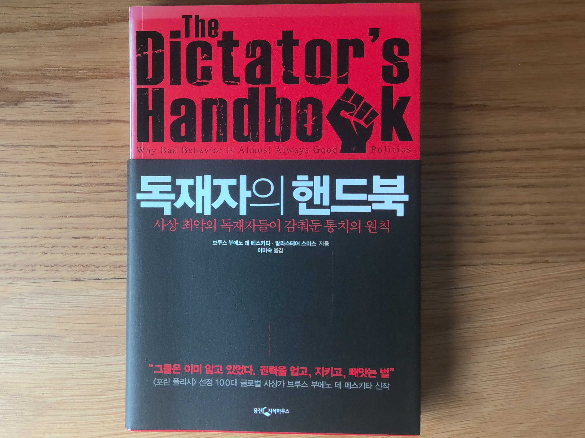

독재자의 핸드북
08/11/2025

브루스 부에노 데 메스키타, 알리스테어 스미스오손 웰즈가 5살 때 형이 약을 먹는 상황에서 했다는 "쓴 약을 먹는 행위는 동물과 인간이 다르다는 것을 보여주는 행위" 란 말은 인간이 지연된 보상을 이해할 수 있다 - 다시말해 눈앞의 이익에 매몰되지 않고 더 큰 이익에 대해 합리적으로 판단할 수 있음을 이야기한 것이라 생각한다.
정치학
하지만 인간 세상에는 생각보다 비 합리적으로 보이는 일들이 무수히 많이 일어난다.
그런 일을 목도했을 때 처음에는 그들이
그런 일을 목도했을 때 처음에는 그들이
아마도 저들이 충분히 합리적인 사고를 할 능력이 부족해서 저런 판단을 한 것일테다라고 생각했었다. 그런데 누구보다 배울만큼 배웠고 평소에는 충분히 합리적인 판단을 했던 정치 지도자가 행하는 비 합리적인 행동은 능력의 부족으로 설명할 수 없다.
이 책은 권력자의 제 일 목표가 공공의 이익이 아니라 권력을 계속 유지하는 것 이라는 점에서 출발한다. 그도 그럴 것이 내가 권력을 잃으면 공공의 이익을 어떻게 증대시키겠는가?
따라서 권력자는 정치적 지형을
따라서 권력자는 정치적 지형을
- 명목 선출인단 (nominal selectorate)
- 실제 선출인단 (real selectorate)
- 승리 연합 (winning coalition)
- 명목 선출인단은 대체 가능 집단으로 (interchangeables)
- 실제 선출인단은 유력 집단으로 (influentials)
- 승리 연합은 핵심 집단으로 (essentials)
이렇게 바라보면 왜 권력자가 그렇게 대중(명목 선출인단)의 이익에 무관심한지 오히려 특정한 소수(승리 연합)으로 불평등하게 이익을 이전하는지 이해가 된다. 다시말해 대중은 대체 가능한 집단일 뿐이고 나의 권력을 유지하기 위해 필요한 승리 연합의 환심을 계속 사야 하기 때문이다.
또한 권력자들이 때때로 "숙청" 이라는 작업을 통해 핵심 집단의 구성을 주기적으로 교체하는 것이 유력 집단 구성원에게 승리 연합으로 편입될 수 있다는 희망을 줌과 동시에 기존 승리 연합 구성원에게 끊임없는 충성 경쟁을 유도하여 권력을 공고히 하려는 목적임을 이해할 수 있다.
또한 권력자들이 때때로 "숙청" 이라는 작업을 통해 핵심 집단의 구성을 주기적으로 교체하는 것이 유력 집단 구성원에게 승리 연합으로 편입될 수 있다는 희망을 줌과 동시에 기존 승리 연합 구성원에게 끊임없는 충성 경쟁을 유도하여 권력을 공고히 하려는 목적임을 이해할 수 있다.
제목에는 독재자가 들어있어서 무슨 제 3세계에서나 통하는 이야기라 생각할 수 있지만 충분히 민주적인 지도자의 행위 역시 잘 설명할 수 있다.
"인간은 왜 비 합리적으로 행동하는가"에 대해 오랫동안 궁금함을 가지고 있었는데 이 책은 그 중 많은 부분을 해결해 주었다.
"인간은 왜 비 합리적으로 행동하는가"에 대해 오랫동안 궁금함을 가지고 있었는데 이 책은 그 중 많은 부분을 해결해 주었다.